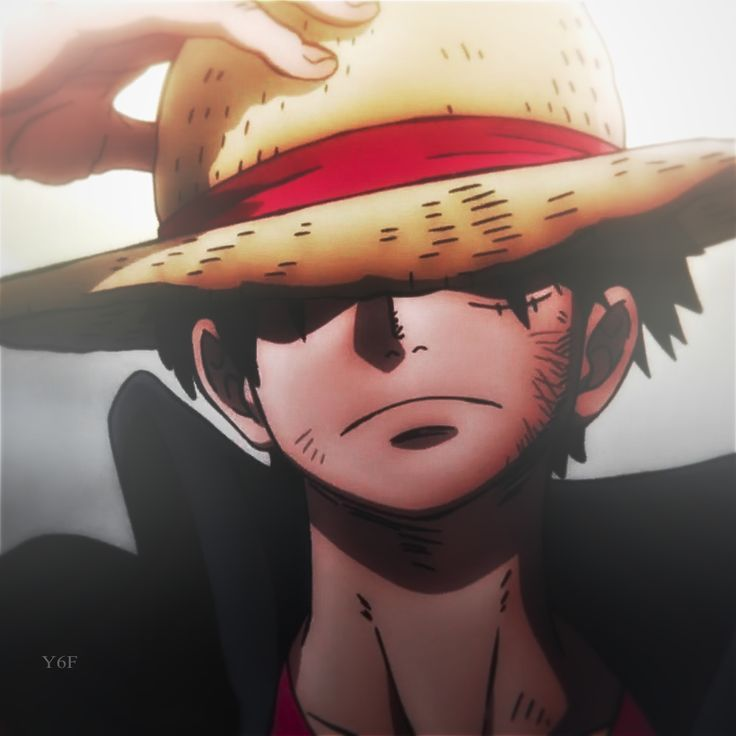
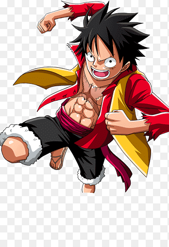

Luffy é o protagonista do anime one piece, ele nasceu na ilha de Dawn, ele é filho do Monkey D. Dragon (lider dos revolucionários) com sua mãe que até o momento atual da história não foi revelada.
Quando ele era pequeno sua ilha foi visitada por um bando pirata muito influente(Bando do ruivo) onde luffy se aproximou muito de seu capitão Shanks, o Ruivo, que convenceu nosso protagonista a se tornar um pirata e ir em busta do maior tesouro do mundo chamado one piece.
Durante essa visita ele comeu sem querer uma akuma no mi(fruto que da poderes ao usuario) chamada gomo gomo no mi que o trasforma em um homem de borracha.Depois de alguns anos ele decidiu sair ao mar e montar uma tripulação para conseguir o one piece e realizar seu desejo.

| Nome | Descrição | Imagem |
|---|---|---|
| Gear 1 ou forma base | É a forma padão do Luffy, onde ele consegue se esticar e tem mais resistencia a socos |  |